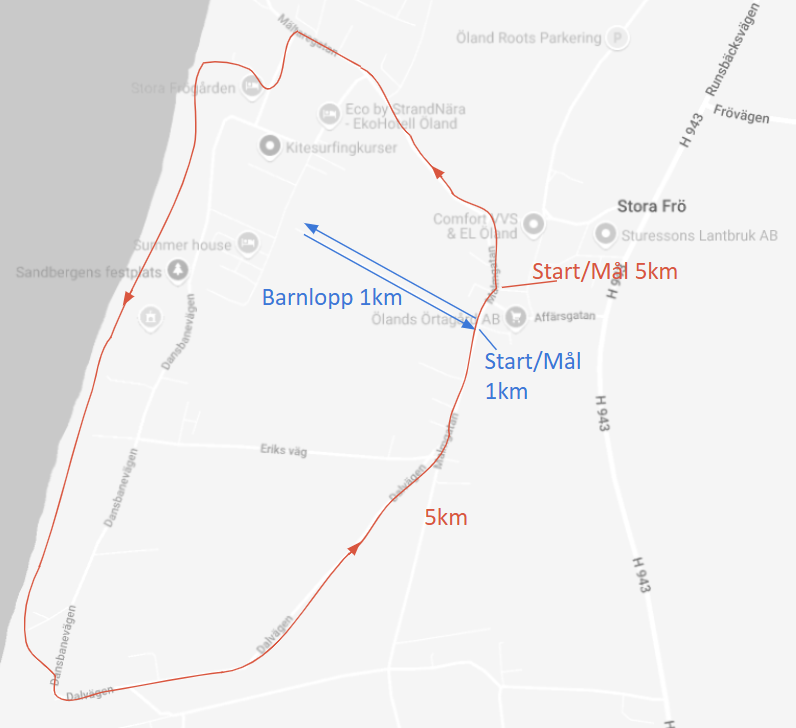

Stora Frös Badhusförening bjuder med glädje in till årets Stora Frölopp!
Stora Fröloppet är ett motionslopp för alla som vill gå, jogga eller springa 5 kilometer i Öländska miljöer när sommaren är som allra finast!
Start sker i mitten av byn Stora Frö och loppet tar dig ner till Kalmarsund i solnedgången, på slingriga stigar i Sandbergens tallskogar och via skogsvägar tillbaka till byn för att firas med fika vid målgång. Nytt för i år är vårt barnlopp, Lilla Stora Fröloppet!
I startområdet grillas det hamburgare till försäljning och spelmannaorkestern bjuder upp till dans.
Prispallen i respektive klass vinner fina priser från våra sponsorer och alla deltagare har chans att vinna priser som lottas ut!
Vill du fortsätta kvällen bjuder Stora Frögården (som du springer genom på loppet) in till pizzabuffe till ett rabatterat pris för deltagare, 195 kr per person. Pizzabuffen öppnar kl 19:30. När du anmäler dig, ange gärna om du vill gå på buffén så att Stora Frögården vet ungefär hur mycket pizza som ska bakas!
Vill du fortsätta kvällen ännu längre så bjuder dessutom Skjulet vid Haga Park in till gratiskonsert med Koala Bar i solnedgången!
Varmt välkomna!
